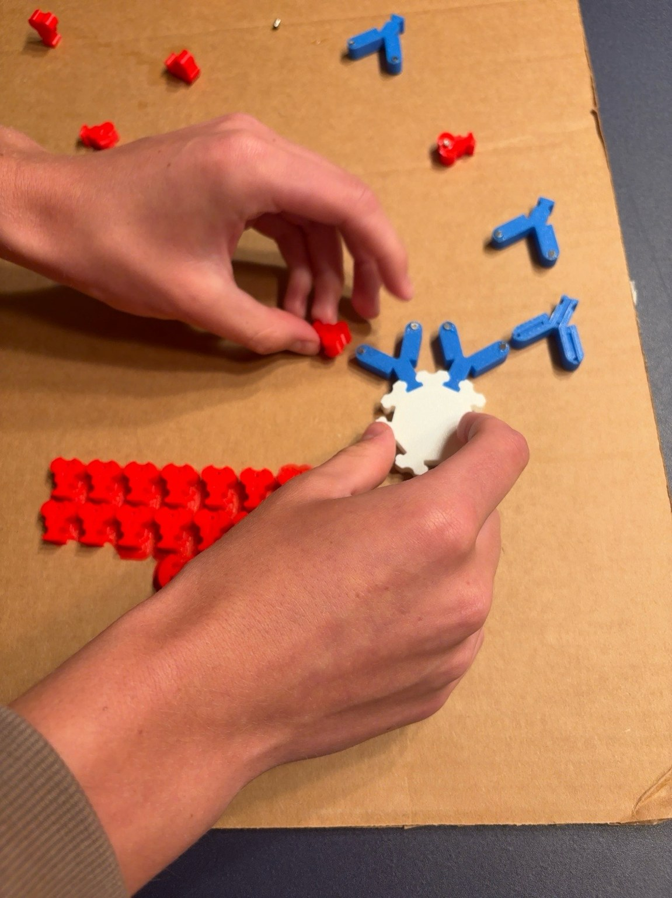
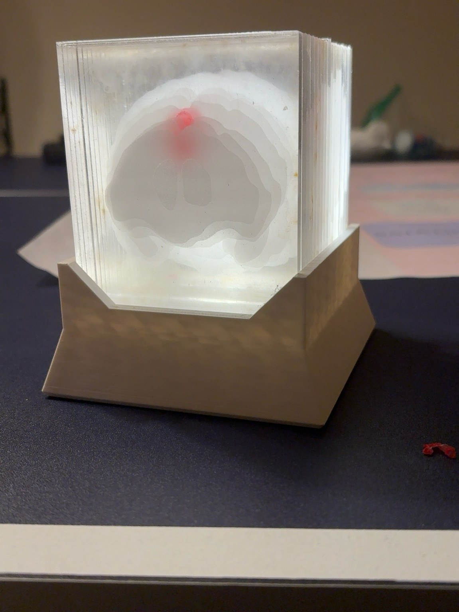

Before the damage is done.
A bioconjugated gold-electrode nanobiosensor that detects TDP-43 — the blood-borne signature of ALS and frontotemporal dementia — at concentrations 10× more sensitive than conventional methods, from a single drop of serum.
ALS, frontotemporal dementia, and Alzheimer's share one brutal property: irreversibility. No therapy restores a neuron that has already died — so the only variable left to control is how early disease is caught. Today's diagnostic pathway is built on tools that are expensive, invasive, and often months too slow.
Receives a blood draw analyzed by a SATA-bioconjugated nanobiosensor as part of a clinical trial. Elevated TDP-43 (0.8 ng/mL) flagged well below the threshold conventional ELISA could reliably catch.
Standard bloodwork returns normal — no biomarker test is available at her facility. She is reassured and sent home as symptoms quietly progress.
Lives three hours from the nearest academic medical center. His family doctor suspects something neurological but has no fast-track referral network.
Two components, neither capable of the other's job. An antibody can recognize a single target protein but cannot report that recognition electrically. A gold electrode can transduce an electrical signal but cannot tell one protein from another. Bioconjugation is the covalent bridge that fuses them into one functioning sensor.
Crosslinkers are molecular bridges that target the reactive groups naturally sitting on an antibody's surface — primary amines on lysine residues, thiols on cysteine residues.
Identical reactive groups at both ends. Bridges two matching functional groups — but offers no control over orientation.
Two different reactive ends enable step-wise, directional conjugation — keeping the antibody's binding site facing outward and accessible.
Each bioconjugation strategy trades speed, control, and cost differently. The biosensor described here uses the second: SATA thiol modification.
N-hydroxysuccinimide esters react with primary amine groups on the antibody surface under mild physiologic-to-alkaline conditions, yielding stable amide bonds. Fast, efficient, and gentle enough to leave the antibody undamaged.
Its weakness is precision: lysines sit all over the antibody, including near the binding site, so some fraction of conjugated antibodies end up oriented the wrong way — facing into the surface instead of out toward the sample.
SATA (N-succinimidyl S-acetylthioacetate) reacts with antibody amines to install a protected thiol. Hydroxylamine deprotection then liberates a free sulfhydryl group on the antibody surface.
That sulfhydryl forms a spontaneous gold–sulfur (Au–S) bond directly with the electrode — among the most stable, well-characterized linkages in biosensor chemistry — giving denser surface coverage and far more consistent antibody orientation than NHS coupling alone.
Azide groups react with alkyne groups to form a stable triazole ring — fast, aqueous-compatible, and producing no unwanted byproducts. The copper-free SPAAC variant avoids cytotoxic copper catalysts entirely.
Its defining property is bioorthogonality: azides and alkynes don't occur naturally in biological samples, so the reaction finds only its intended partner — the most precisely controlled conjugation method available.
Four layers, each earning its place on the electrode. Click through the stack — the same sequence physically modeled in our 3D-printed antibody/antigen demonstration.
Highly conductive and biocompatible, with a unique chemical affinity for thiol-containing molecules through Au–S bond formation — the foundation every other layer anchors to.
A single organized layer of thiol molecules that primes the gold surface and resists non-specific protein adsorption — without it, background serum proteins would stick randomly and generate false signal.
SATA-thiolated anti-TDP-43 antibodies form spontaneous Au–S bonds with the gold surface, anchoring with binding sites consistently oriented outward and accessible.
Bovine serum albumin fills the remaining gaps of exposed gold between antibodies — chemically inert, so only TDP-43 binding can ever generate a signal.
TDP-43 normally lives in the nucleus, regulating gene expression. In ALS and FTD it mislocalizes, misfolds, and leaks into the bloodstream as neurons break down — which is exactly what makes it detectable outside the body.
When serum is applied, TDP-43 molecules diffuse to the electrode and bind the anchored antibodies. That binding event physically changes the electrode interface — added mass, shifted charge distribution — which alters how it responds to an applied voltage.
A series of small voltage pulses is applied and the resulting current measured. The shift in current maps directly onto TDP-43 concentration via a calibration curve — turning a molecular binding event into a precise, readable number in under an hour.
Sensitivity, specificity, practicality — the three metrics any diagnostic tool is judged on.
| Metric | Conventional monolayer | SATA-bioconjugated (this device) |
|---|---|---|
| Relative current output | 1× | 10× |
| Au–S surface density | Lower | Significantly higher |
| Antibody orientation control | Random | Directionally controlled |
| Detection floor | — | 0.0005 µg/mL |
| Fabrication cost | — | $2.10 / device |
| Time to result | — | < 60 minutes |
Validation to date has occurred primarily in controlled laboratory settings with prepared samples. Larger clinical trials across diverse patient populations and disease stages, FDA regulatory review, and performance testing in whole blood without prior centrifugation all remain active areas of work before point-of-care deployment.
Two hands-on models translate the chemistry above into something a judge can physically pick up and manipulate during the interview.

